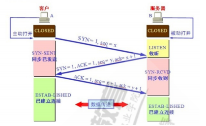
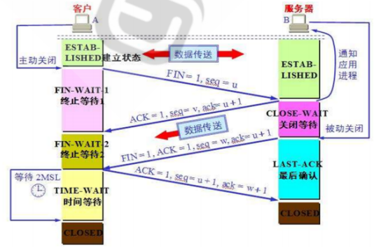

TCP协议三次握手（建立连接）和四次挥手（断开）原理，网卡配置和绑定
TCP/IP协议
全称Transmission Control Protocol/Internet Protocol 传输控制协议/因特网互联协议，与UDP协议相比更注重通信双方连接的稳定性和可靠性，也因此应用于对传输速度要求不高的领域，与UDP协议形成互补。
TCP三次握手（建立连接）
建立连接过程双方共需要发送3次数据报文，是因为需要分别确定请求连接方和对方都能成功接收和发送信息给对方。

链接发起方先发送带有SYN（表明该报文段用于建立连接）的同步请求报文，自身进入同步发送态，等待接收回复；对方收到请求后若同意连接则回复应答：含有ACK=1（表示同意）seq=y和ack=x+1表示自身和希望的对方的数据初始序号，随后进入同步收到态。
连接发起方收到回复后就确定了自己能够成功发送和接收对方数据，进入连接状态，同时向对方发送确认报文，报文数据的初始序号为对方上条报文ack=x+1确定的位置。
对方收到上条报文后也确定了自己能够成功发送和接收对方数据，进入连接状态。
TCP四次挥手（断开连接）
四次挥手的原理与三次握手类似，但还需要在断开连接前完成残余数据的发送。客户端最终的时间等待状态是考虑到网络延迟的问题，防止服务器端关闭等待状态中部分发送的数据包还未到达从而丢失的问题。

客户端数据发送完成，则它向服务端发送连接释放请求报文，携带FIN=1表示该报文段是一个连接释放请求，seq=u可得发送数据的最后一个字节位置，客户端将进入终止等待1状态。
服务器收到客户端连接释放报文，通知相应的高层应用进程客户端方向的连接已经释放了。此时服务端进入了关闭等待状态，并向客户端发出连接释放的应答报文包含：ACK=1（表示同意），ack=u+1表示希望收到从第u+1个字节开始的报文段，应答报文开始序列号seq=v。开始残余数据发送。客户端收到应答后进入终止等待2态，等待接收残余数据。
服务端将最后的数据发送完毕后，就向客户端发送连接释放报文，包含：FIN=1，ack=u+1。此时，服务器就进入了最后确认态，等待客户端的确认。
客户端收到服务器的连接释放报文后，向服务端发出确认应答，报文头：ACK=1，ack=w+1，而自己的序列号是seq=u+1，此时，客户端就进入了时间等待状态，过一段时间后进入断开态。服务器收到该应答则会立即断开。
网卡配置
静态IP配置
CentOS
| #修改网卡配置文件
[root@centos8 ~]$vim /etc/sysconfig/network-scripts/ifcfg-eth0
DEVICE=eth0 #设备名
NAME=eth0
BOOTPROTO=static #需要修改，=dhcp为自动分配ip，static使用静态地址
IPADDR=10.0.0.150 #需要添加，指定IP地址
PREFIX=24 #子网掩码
GATEWAY=10.0.0.2 #网关，连接其他网段时必需
DNS1=10.0.0.2
DNS2=180.76.76.76
ONBOOT=yes #是否启用
#使配置文件生效
[root@centos8 ~]$nmcli connection reload eth0
[root@centos8 ~]$nmcli connection up eth0
|
Ubuntu
1
2
3
4
5
6
7
8
9
10
11
12
| #修改网卡配置文件，该文件缩进严格，若格式不对网卡将不生效
root@ubuntu1804:~# vim /etc/netplan/01-netcfg.yaml
network:
version: 2
renderer: networkd
ethernets:
ens33: #网卡设备名
addresses: [10.0.0.151/24] #需要添加，指定IP地址
gateway4: 10.0.0.2
#dhcp4: yes #默认dhcp分配ip，需要关闭
#立即生效
root@ubuntu1804:~# netplan apply
|
网卡绑定bond0
1
2
3
4
5
6
7
8
9
10
11
12
13
14
15
16
17
18
19
20
| #使用nmcli工具生成配置文件
#type指定网卡类型为bond， mode选择聚合链路模式为0 设置网卡ip
[root@centos8 ~]$nmcli con add type bond con-name ethbond0 ifname bond0 mode balance-rr ipv4.method manual ipv4.addresses 10.0.0.160/24
Connection 'ethbond0' (e6fae3c2-46fe-4892-b457-fc813fab0ed1) successfully added.
#添加从属网卡
[root@centos8 ~]$nmcli con add type bond-slave ifname eth0 master bond0
Connection 'bond-slave-eth0' (eaa05680-87e6-4684-b69b-ab9f1e0ffe96) successfully added.
[root@centos8 ~]$nmcli con add type bond-slave ifname eth1 master bond0
Connection 'bond-slave-eth1' (844df635-954f-4496-8fec-1740dc768a6c) successfully added.
#启用bond网卡
[root@centos8 ~]$nmcli con up bond-slave-eth0
[root@centos8 ~]$nmcli con up bond-slave-eth1
[root@centos8 ~]$nmcli con up ethbond0
[root@centos8 ~]$nmcli connection show
NAME UUID TYPE DEVICE
ethbond0 e6fae3c2-46fe-4892-b457-fc813fab0ed1 bond bond0
virbr0 b553e4bb-f868-428f-902b-0df0c73d2fe4 bridge virbr0
bond-slave-eth0 eaa05680-87e6-4684-b69b-ab9f1e0ffe96 ethernet eth0
bond-slave-eth1 844df635-954f-4496-8fec-1740dc768a6c ethernet eth1
eth0 5fb06bd0-0bb0-7ffb-45f1-d6edd65f3e03 ethernet --
|